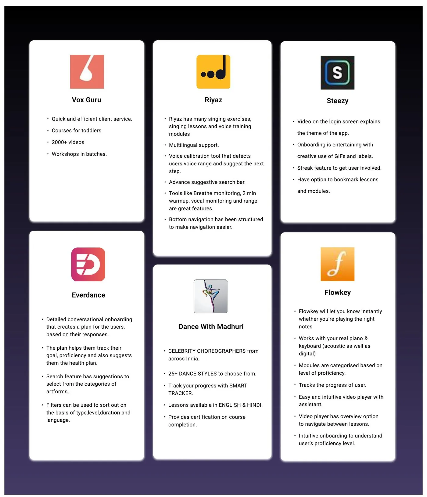
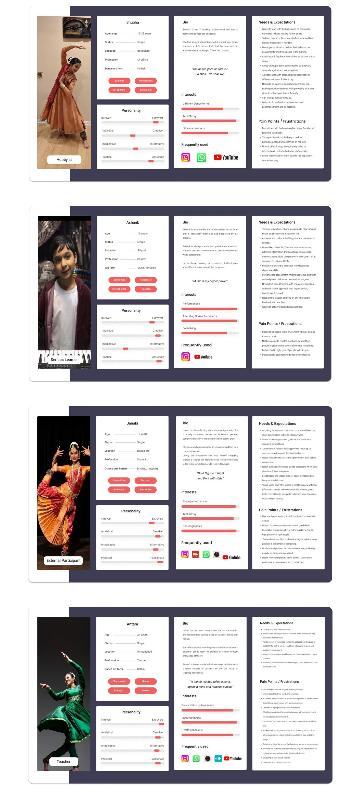
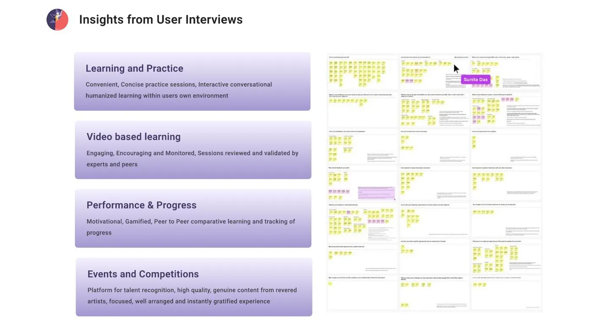
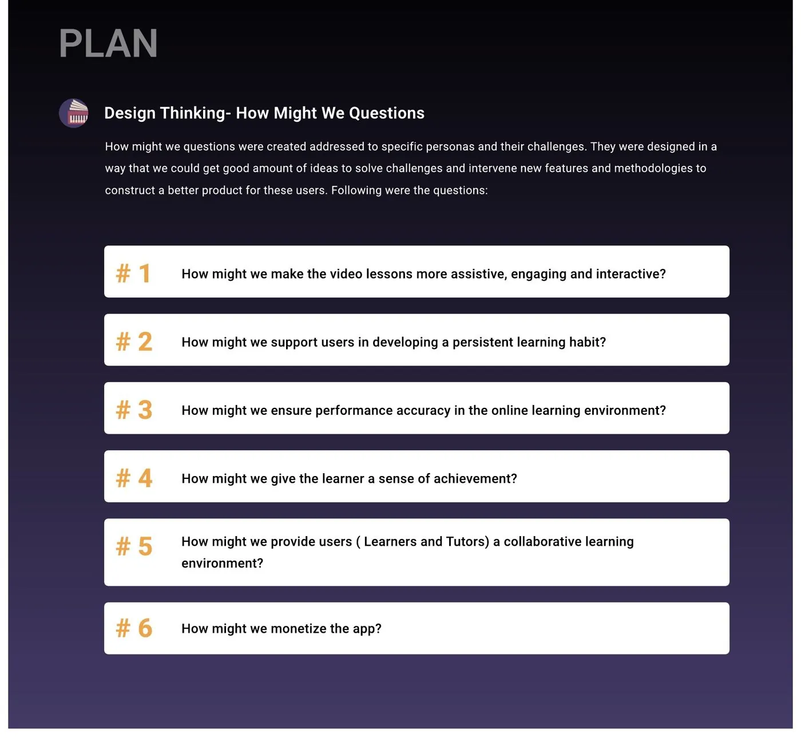
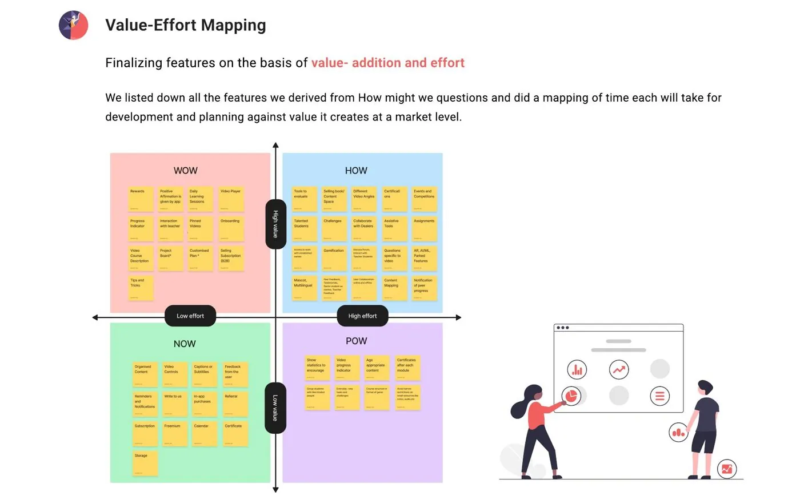
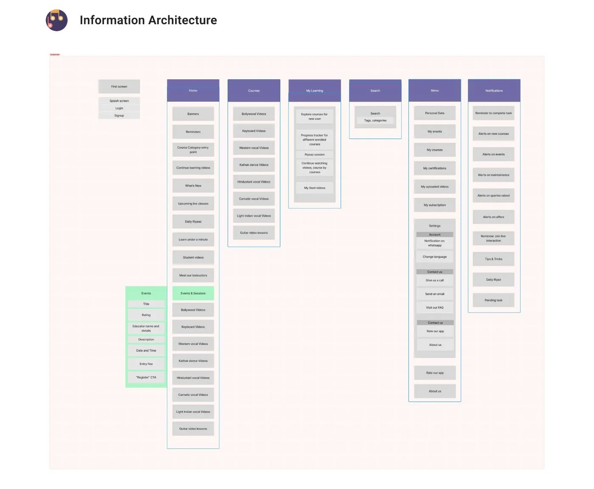
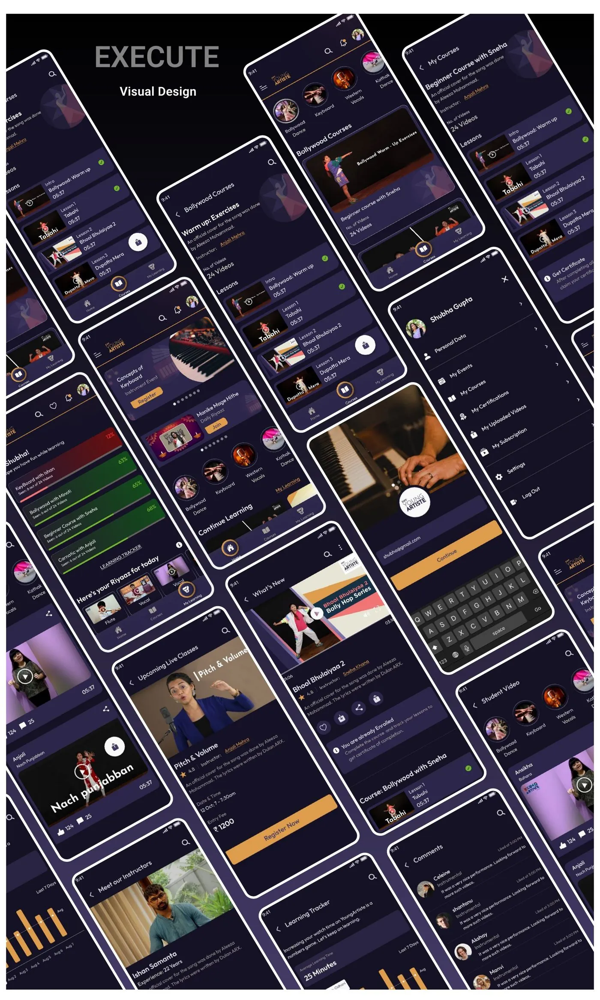
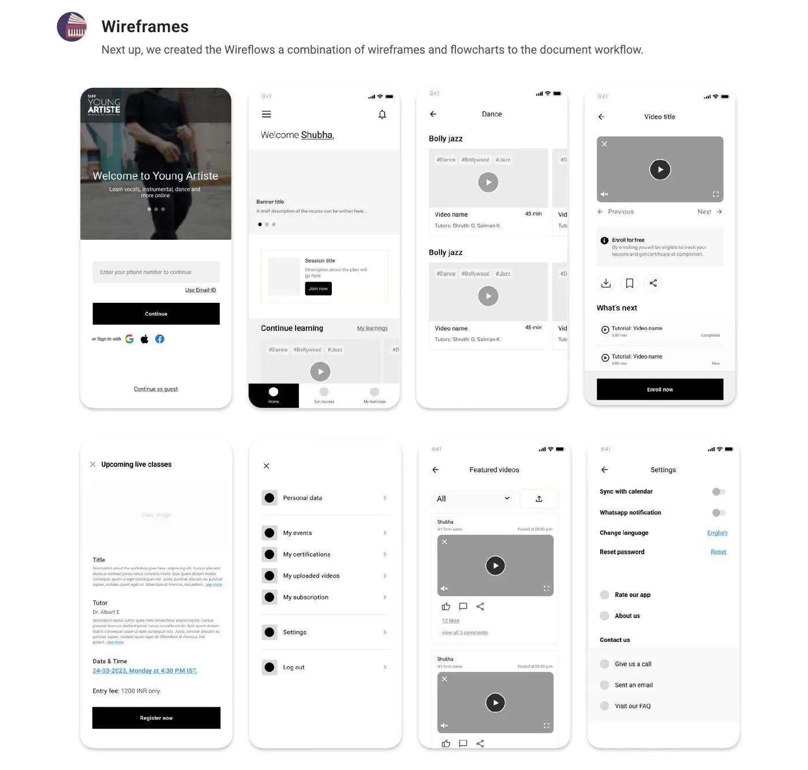
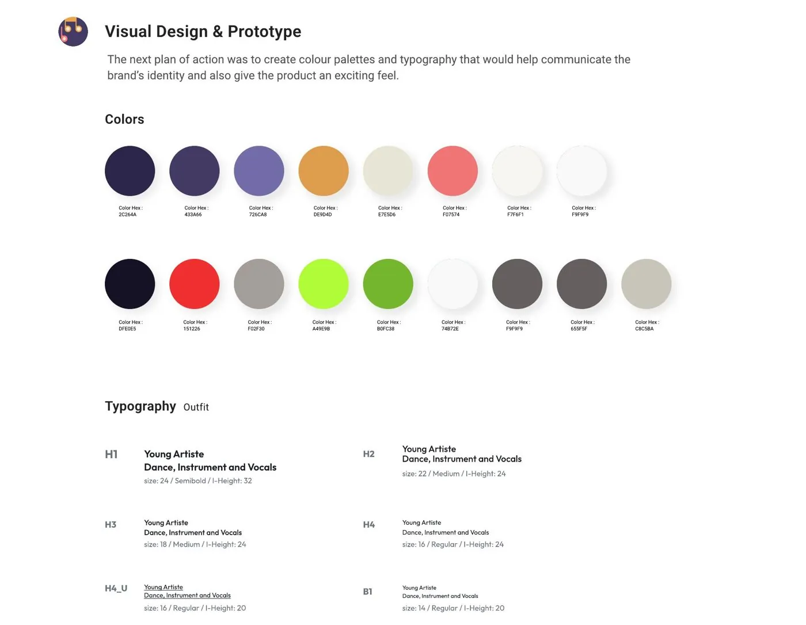

The short version
Keeping online music and dance learners practising between classes.
- Problem Students practising alone lacked structure, discipline and anyone to interact with.
- Brief A mobile app for students, teachers and admins, with the full learning portal and live classes.
- Goal Help anyone find something to learn for their time, budget, interest and level, and keep them coming back.
- Outcome On hold before launch, by the client.
My part I led UX end to end with one other designer, from the alignment workshop to the hi-fi prototype.
What made it hard
- Learners couldn’t see progress. One job story put it this way: “I want to see learning-path milestones at every stage so I can see my progress.”
- Practice stalled without feedback. Interviews asked for sessions reviewed by experts and peers.
- Motivation faded fast. Interviews pointed to gamified progress and peer comparison as ways to keep people from slacking off.
- Four different people. Hobbyists, serious learners, external participants and teachers all needed to be served, and the brief asked for every feature of the existing portal and live classes.
How my thinking changed along the way
A path instead of a video library
Many competitors offer a searchable library of standalone videos, and we could have done the same. But the core problem was a lack of structure, and a library leaves the learner to decide what to watch next. So every course became ordered lessons with completion ticks, and “Continue learning” sits on the home screen. A path answers “what do I do next?” before the learner has to ask. The trade-off is less freedom for someone who just wants one song or routine.
Build for the habit, not only the lesson
Progress, feedback and motivation kept coming up in the interviews. That pushed us to design for short practice sessions, recognition and a reason to return tomorrow, with feedback from teachers, peers or the app itself.
Sorting the ideas by value and effort
Ideas ranged from habit trackers to monetisation. We mapped every feature from the six How-might-we questions by market value against development effort, which kept the first release focused on learning and motivation. Some valuable but costly ideas had to wait for later releases.
What we left out, on purpose
Before designing anything we benchmarked six learning apps, built four personas from interviews and grouped what we heard into themes. Then we turned it into six questions and sorted the ideas by value and effort. What didn’t make the first release is on the value-effort map.






What learners see
Learners get a deep purple, stage-like app built around courses, lessons, live classes, practice and a profile. Here is the visual design, the wireflows and the style guide behind it.



Where it ended up
- It never launched. The client put the project on hold after the design was delivered.
- What we delivered: research, personas, job stories, a prioritised feature set, IA, wireflows, a style guide, the full visual design and a clickable prototype.
- No formal client feedback was shared with us.
What didn’t go to plan
The app was never tested with live students. We followed a thorough process and delivered the full design, but the client put the project on hold before launch, so I can’t say how learners would have responded.
We also never heard formal feedback from the client, so I don’t know how the design landed with them.
What I’d do next
Put early prototypes in front of real learners sooner, before the visual design is final, and use what they say to make the app easier to use.